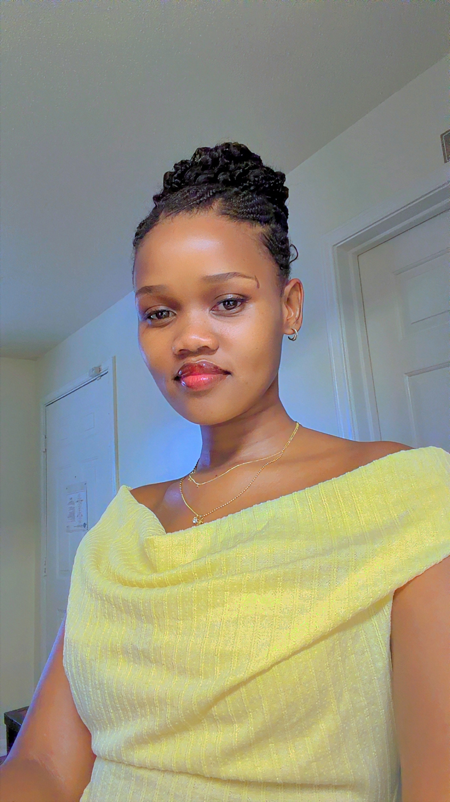

Life Sciences Educator | Educational Technology | AI in Education
View Resume Download CVI am a Fulbright Scholar and researcher with a background in Life Sciences and Educational Technology, focusing on the role of artificial intelligence in education. My work explores how emerging technologies can be integrated into teaching and learning in meaningful and contextually relevant ways, particularly within science education. Drawing on experience across South African and international contexts, I am interested in addressing challenges such as resource constraints, teacher preparedness, and equitable access to digital tools. My research interests include AI in education, virtual laboratories, and technology-supported learning design.
